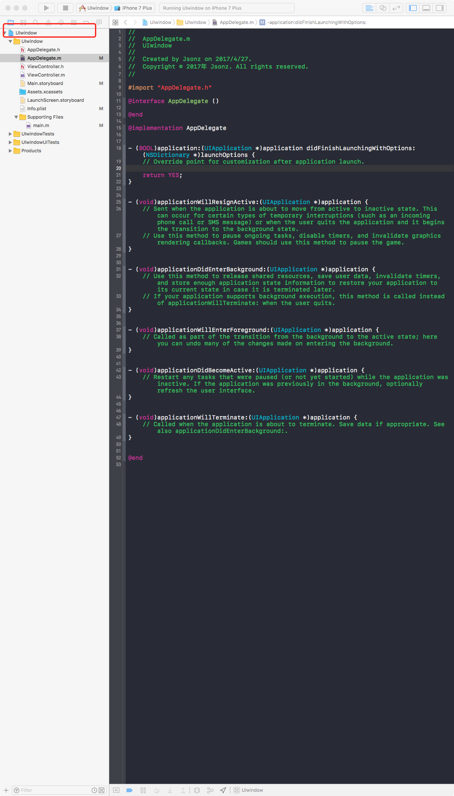
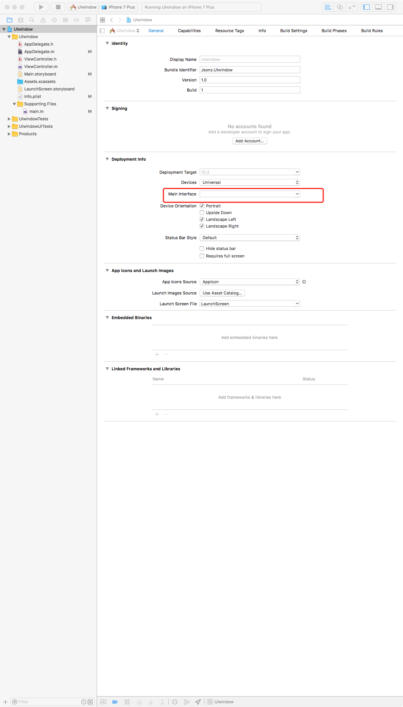
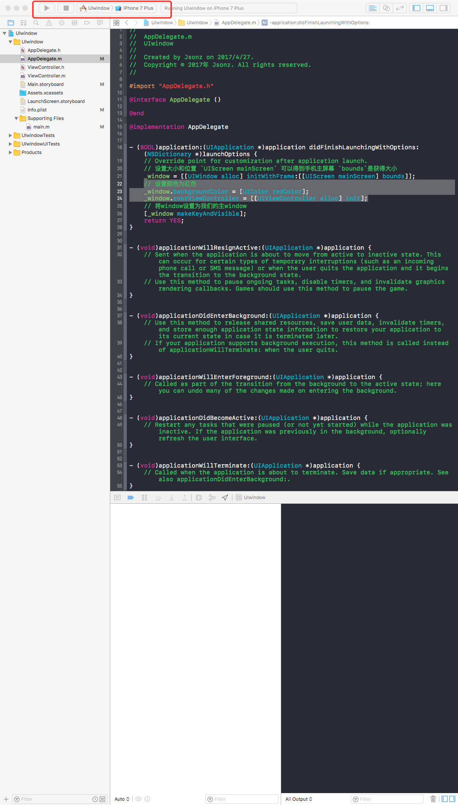
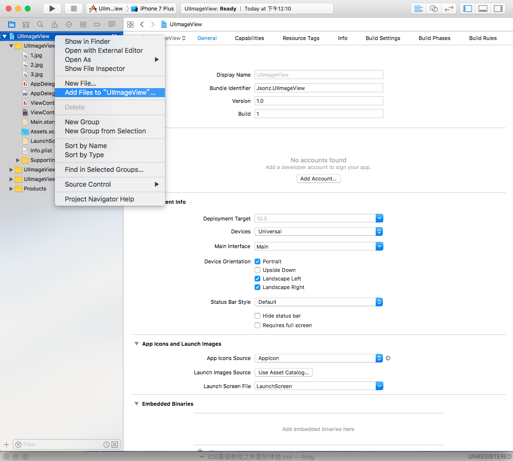

创建项目
因为要学的是 UIwindow， 所以创建的不再是之前的Command Line Tool。 选择iOS=>Single View Application.
语言选择ObjectiveC, 项目名根据自己喜欢的取。
Hello UIwindow
main.m 入门文件不再出现在根目录上，而是在Supporting Files下。
默认引用了 <UIKit/UIKit.h> 和 "AppDelegate.h"
点击项目文件

删除 Main Interface的默认值Main

然后打开AppDelegate.m 开始来手动来设置一下mainInterfacez
|
|
修改后按 cmd(⌘)+R或按左上角的三角形按钮来 run app。骚等片刻就可以看到 一个全屏红色的模拟器.
;
UIView
新建一个项目。
- UI的基类， 基础
- UIView的属性
- UIView的方法
- UIView的自适应
|
|
UILabel
- 文本标签
- UIColor 颜色类
新建一个项目
|
|
UIImageView 图片view
新建一个项目,添加自己喜欢的照片到项目里。 比如我 肯定是添加GAKKI的

|
|